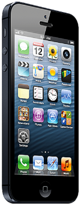
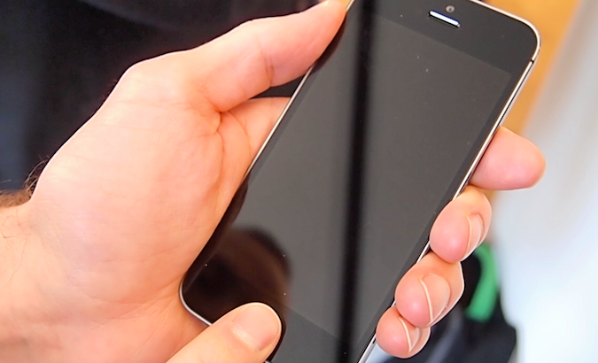

Ecran d'accueil
L'écran d'accueil est l'endroit où vous trouverez toutes vos applications et il est le moyen par lequel vous interagierai avec votre appareil. Toutes les applications installées depuis le AppleStore ou le magasin de Hydro-Québec sont ajoutées sur cet écran. Généralement vous aurez plusieurs pages, qui sont représentées par les petits point au bas de l'écran.
Le point blanc représente la page courante alors que les points gris représentent les autres pages. Pour passer d'une page à l'autre vous avez simplement à faire glisser votre doigt horizontalement sur l'écran pour consulter les pages adjacentes.
Notez que les icônes situés au bas de l'écran demeurent toujours les même. C'est un excellent endroit pour mettre les applications dont vous vous servez souvent. Voir comment...
Retour à l'écran d'accueil
Lorsque vous désirez revenir à l'écran d'accueil, il suffit de presser le bouton rond situé au bas de l'appareil. Oui, le bouton va en bas!
